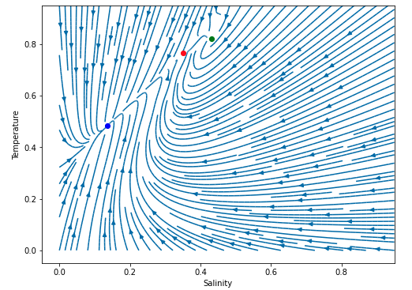
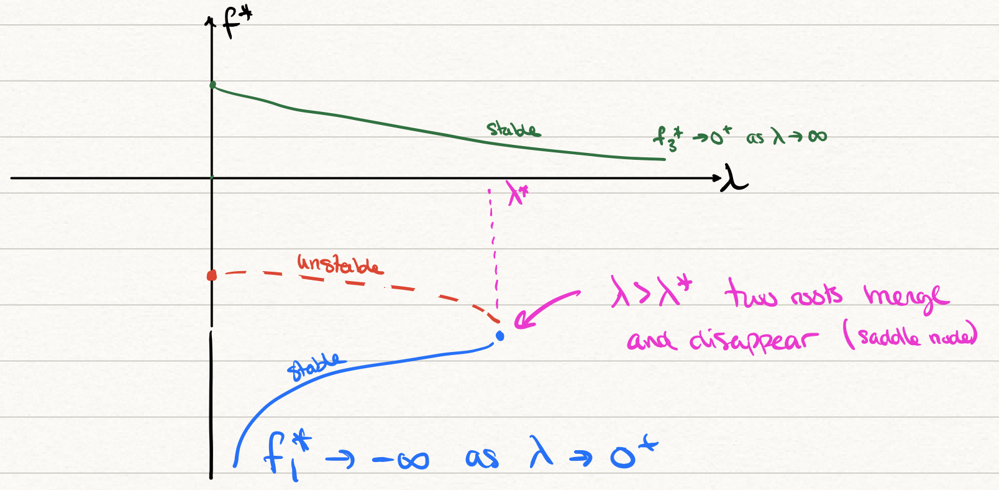

In addition to the model studied in Section 25.7, there is another kind of reduced model that is examined in this chapter.
In his work (Stommel 1961) did not account for evaporation or precipitation, so there is no virtual salt flux, \(H = 0\), but each box does exchange salinity with its surrounding environment, so \(d > 0\). The set of four differential equations presented in Chapter 25 (Equation 25.6) can be reduced two coupled differential equations for the mean temperature and salinity. We notice that if we subtract the pairs of equations, then we can write \[
\begin{align}
\frac{\mathrm{d}\Delta T}{\mathrm{d}t} = c(\Delta T^* - \Delta T) - 2|q|\Delta T, \\
\frac{\mathrm{d}\Delta S}{\mathrm{d}t} = d(\Delta S^* - \Delta S) - 2|q|\Delta S,
\end{align}
\tag{26.1}\] where \(\Delta T^* = 2T^*\), \(\Delta S^* = 2S^*\), and we have defined the two new unknowns, \[
\begin{align}
\Delta T &= T_2 - T_1, \\
\Delta S &= S_2 - S_1,
\end{align}
\] and now, the flow \(q\) is given by \[
q = k(\alpha \Delta T - \beta \Delta S).
\]
26.1 Non-dimensionalisation
We can then nondimensionalise the system by setting \[
x = \frac{\Delta S}{\Delta S^*}, \quad y = \frac{\Delta T}{\Delta T^*}, \quad t' = ct,
\] where \(t'\) is nondimensional time. Dropping the primes henceforth, we have the following set of non-dimensional equations to study for the unknowns, \(x = x(t)\), and \(y = y(t)\): \[
\begin{align}
\frac{\mathrm{d}x}{\mathrm{d}t} &= \delta(1 - x) - |f(x, y)|x, \\
\frac{\mathrm{d}y}{\mathrm{d}t} &= 1 - y - |f(x, y)|y,
\end{align}
\tag{26.2}\] where we have introduced the function, \[
f(x, y; R, \lambda) = \frac{1}{\lambda}(Rx - y),
\tag{26.3}\] where there are now three non-dimensional parameters given by \[
\begin{align}
\delta &= d/c, \\
\lambda &= c/(2\alpha k \Delta T^*), \\
R &= \beta \Delta S^*/(\alpha \Delta T^*).
\end{align}
\] Together Equation 26.2 and Equation 26.3 form a system of equations for \((x(t), y(t))\), with parameters \(\delta\), \(\lambda\), and \(R\).
Although there are many parameters, it is important to note that the quantity \(f\) is crucial since it corresponds to the direction of flow in the bottom pipe of the Ocean model. By convention, the system was set up so that \(f > 0\) corresponds to flow through the bottom pipe goes in the direction of the equator (Box 1) as a result of higher densities at the high latitudes. We are subsequently interested in whether it is possible for \(f\) to switch sign, which would correspond to a bottom flow going from equator to poles, and the entire system switching direction.
26.2 Equilibrium states
Let the equilibrium states be given by \((x^*, y^*)\) with \(f(x^*, y^*) = f^*\). Then setting the right hand sides of (Equation 26.2) to zero and solving, we find \[
x^* = \frac{\delta}{\delta + |f^*|} \quad \text{and} \quad
y^* = \frac{1}{1 + |f^*|}.
\tag{26.4}\] We can solve for \(f^*\) in both equations and equate the result to one another. This gives \[
\delta \frac{1-x^*}{x^*} = \frac{1 - y^*}{y^*} = |f^*|.
\] Therefore the equilibrium points lie along the above curve. Let us generate different values of \(f^*\) and plot the combination.
The above shows the steady-state values at \(\delta = 1/6\). Each point refers to a different value of \(|f^*|\). Note that as \(|f^*| \to \infty\), then \((x^*, y^*) \to (0, 0)\) while as \(|f^*| \to 0\), then \((x^*, y^*) \to (1,1)\).
Now the above does not tell us what equilibrium states will exist at a specific value of \(\delta\) since it requires information about \(f^*\). We take (Equation 26.3) and combine with (Equation 26.4). We conclude that the equilibrium points must satisfy \[
\lambda f^* = \phi(f^*),
\] where we have defined the function \(\phi\) according to \[
\phi(f^*) = \frac{\delta R}{\delta + |f^*|} - \frac{1}{1 + |f^*|}.
\tag{26.5}\] Therefore, for each combination of the parameters \((\lambda, \delta, R)\), we must solve \(\delta f^* = \phi(f^*)\) to determine \(f^*\). Once the values of \(f^*\) are known, then the steady-states \((x^*, y^*)\) are also known. Here is a typical graph showing the potential intersections at the values of \(\lambda = 1/5\), \(\delta = 1/6\) and \(R = 2\).
Although there are many parameters that can alter the shape of the overall graphs, note that if \(\lambda\) is increased from its current value of \(\lambda = 1/6\), then two of the left roots will disappear, leaving only a single root.
26.3 Stability
We let \(x = x^* + \xi\) and \(y = y^* + \eta\) and linearise the system about the fixed points. This gives \[
\begin{pmatrix}
\dot{\xi} \\
\dot{\eta}
\end{pmatrix} = A
\begin{pmatrix}
\xi \\ \eta
\end{pmatrix},
\] where the matrix \(A\) is given by \[
A =
\begin{pmatrix}
-(\delta + |f^*|) \mp \frac{Rx^*}{\lambda} & \pm \frac{x^*}{\lambda} \\
\mp \frac{Ry^*}{\lambda} & -(1 + |f^*|) \pm \frac{y^*}{\lambda}
\end{pmatrix}
\] if \(f^* \gtrless 0\).
There are two ways or proceeding. We can numerically substitute the fixed points into the above matrix for \(A\) and then calculate the eigenvalues (numerically or otherwise). Or we can directly proceed analytically.
If proceeding analytically, we can then calculate the trace and determinant, giving \[
\begin{align}
T &= -(1 + \delta + 3 |f^*|), \\
D &= (\delta + 2|f^*|)(1 + |f^*|) \pm (1 - \delta) \frac{y^*}{\lambda}.
\end{align}
\] Using the above, we can analytically calculate the key discriminant expression of \(T^2 - 4D\) (or numerically) in order to verify stability. The details of the classification scheme is given in the appendix Chapter 43.
For our purposes, we will mainly proceed using numerics, and bypass the need to study the above results analytically.
In the accompanying lecture script, we will obtain the eigenvalues numerically, and generate the phase plane. At the test point \(R = 2\), \(\delta = 1/6\), and \(\lambda = 1/5\), we generate the following phase plane picture.

Figure 26.1: Phase plane for \(R = 2\), \(\lambda = 1/5\) and \(\delta = 1/6\). The blue, red, and green fixed points correspond to \(f_1\), \(f_2\), and \(f_3\) in order. The blue point is a stable node, the red point is an unstable saddle, and the green point is a stable spiral.
26.4 Bifurcation diagrams
Once the above stability analysis, it is possible to sketch the final bifurcation diagram.
First, we can note that as \(\lambda\) increases, the graph in Section 26.2 indicates that there may either be three intersections (as shown) or if \(\lambda\) increases then two of the intersections may disappear. We can note that:
\(f_i^*\)
\(\lambda \to 0^+\)
\(\lambda \to \infty\)
\(f_1^*\)
\(-\infty\)
none
\(f_2^*\)
fixed point < 0
none
\(f_3^*\)
fixed point > 0
0
We can also ascertain that there should be a point, say \(\lambda = \lambda^*\) where the two roots coalesce, \(f_1^* = f_2^*\), and thereafter disappear. This allows us to now plot the bifurcation \((\lambda, f^*)\)-plane:

26.5 Stommel’s conclusion
What is the final takeaway message(s)?
It is possible to pose a conceptual model of the ocean and the thermohaline circulation, which governs the exchange of hot-and-cold waters and salty waters from equatorial-to-pole zones.
This conceptual model suggests that tipping points and hysteresis are possible in such systems. In particular, it is possible, according to these models, for the flow directions to entirely change!
“Clearly, two-box models are only a caricature of the THC. At best, they account for the pole-to-equator circulation in single ocean basin (the North Atlantic). They certainly do not account for the fact that all the Earth’s oceans are connected, nor for the fact that the oceans are coupled to the atmosphere and other components of the climate system. Nevertheless, the finding that such simple models predict the possibility of two distinct stable modes of circulation, and that transitions from one more to another can be induced by changing the forcing parameters [–] has had a significant impact in oceanography and climate science.”
Kaper, Hans, and Hans Engler. 2013. Mathematics and Climate. SIAM.
Stommel, Henry. 1961. “Thermohaline Convection with Two Stable Regimes of Flow.”Tellus 13 (2): 224–30.